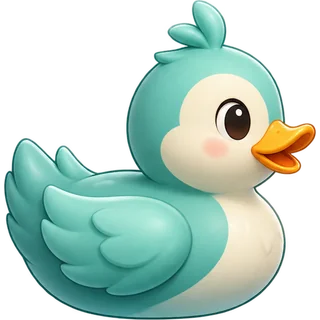
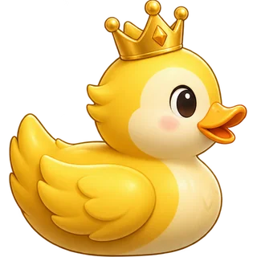
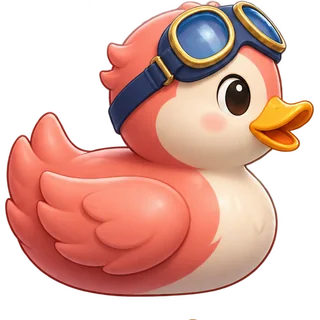

LIVE AT KENNY’S POND
KENNY’S POND · ST. JOHN’S, NL
Pond
Paparazzi.
A little strange.
A little camera magic.
Point at the pond. Tap the curious ducks.
You have 30 seconds to get the shot.
TODAY’S VERY UNUSUAL LOCALS
01 / THE LOCAL

100 PTS04 / GOLDEN HOUR

1,000 PTS02 / THE SPEEDSTER
30SECOND
200 PTSSAFARI
GETTING YOUR VIEWFINDER READY
Opening your camera…
Allow camera access when your browser asks.
No microphone or location needed.
A WIDER WINDOW ON THE POND
Turn your phone sideways.
Stay at the bench and point toward the water.
ONE QUICK ALIGNMENT
Find the far shore.
Match the dashed line to where the opposite trees meet the water.
FAR SHORE
KEEP THE NEAR EDGE ABOVE ROCKS / REEDS
Keep still. Realign anytime.
3
Tap a duck to take its photo.
Keep your feet—and your phone—steady.SCORE0
MEET THE LOCALS
TIME LEFT30s
TAP A DUCK TO PHOTOGRAPH
TIME & SCORE ARE SAFE
Point back toward the pond.
Stay at your bench. Match the shoreline again when you’re ready.
THAT’S A WRAP
A fine eye for
the unusual.
0
A fresh pair of pond eyes.
0 photos0× best combo0% accuracy
KENNY’S POND · PHOTO FINISH
Unusual ducks. Excellent company.
LET’S GET YOU BACK TO THE POND